RESEARCH
Future Great Comics: Content Strategy Plan
INTRODUCTION
Within the following content strategy plan, I will be detailing my methods of research on Future
Great Comics’ current social media presence. This research method consisted of four major parts: a
rhetorical analysis developed from the coding and analysis of 34 selected posts across Future Great
Comics social media accounts, a core strategy statement and messaging framework developed in order
to best represent the goal of these social media accounts, a small sample social media campaign
developed thanks to the recommendations and research from the rhetorical analysis, and usability and
UX research which involved interviewing three participants who were once followers of at least one
of Future Great Comics’ social media accounts and represent the core demographics they are
attempting to reach.
This extensive research has led to key findings that suggest Future
Great Comics is struggling when it comes to quantity over quality of posts, misuse of their
accounts, and frequent alienation of many of their target audiences. In order to remedy this, I
suggest that FGC should develop a weekly editorial calendar, establish a brand style guide, utilize
more technological affordances in posts, and also develop a magic layer in order to make their
social media pages more engaging.
METHODS
Rhetorical Analysis
In my rhetorical analysis, I coded a selection of 34 posts from Future Great Comics that were posted on Instagram, Facebook, and Twitter/X. This coding process allowed me to determine typical posting habits for Future Great Comics such as the design of post, caption length and content, number of hashtags used, frequency of posting, and other attributes across the different social media platforms they use. Some other specific categories I looked for with these posts were the main topic or theme of each post, the accessibility of the post, the rhetorical devices used (ex. Ethos, pathos, logos), and what audience a post was directed towards (ex. comic book readers, star wars fans, tabletop roleplaying game (TTRPG) players, etc.). All of these attributes were compared to the post’s number of likes, comments, and retweets in order to determine what variations in these attributes correlated with higher or lower engagement rates.
Core Strategy Statement & Messaging Framework
My next step after completing my rhetorical analysis was to create a sample social media campaign for
Future Great Comics’ future posts under the recommendations and guidance of my analysis. In order to
create this campaign, I first created a core strategy statement and messaging framework. This step
was vital in creating a consistent and efficient guide for these posts.
The core strategy statement is as follows:
“The content we produce helps Future Great Comics get those with niche, geekier interests recognize
Future Great Comics as a space to explore their passions and further fuel those passions in buying
their products. Our content helps them accomplish this goal
by providing specific kairotic and commemorative content targeting specific geek types that makes
every catered to audience feel seen by and comfortable with Future Great Comics so they're
encouraged to visit the store and buy their products.”
The messaging framework is as follows:
“When a user first reads out posts, we want them to feel seen and find a sense of belonging. After
spending a few minutes in our social, users should feel confident in our ability to fuel their
passions through our products because they understand we provide similar passions to theirs and
extensive knowledge on various subsets of geek culture. Our content demonstrates that we provide
just what our users need because of our specific kairotic posts that target niche interests and
audiences, extensive knowledge on different facets of geek culture, and our dedication towards the
cultivation of community through our accessible posts and catering to many audiences.”
Sample Social Media Campaigns
In order to test my findings from the rhetorical analysis, I created a mock social media campaign which included the creation of 8 posts Future Great Comics could potentially use for their Instagram and Facebook accounts. These posts included (content). They were designed to not only provide more exciting and engaging content for Future Great Comics to potentially post, but also to replicate what posts that better reflect Future Great Comics’ purpose and mission statement could potentially look like. They were designed to make better use of technological affordances such as hashtags, carousel posts that utilize multiple photos, and videos with closed captions for accessibility. After creating this campaign, I was able to deduce the feasibility of my recommendations for Future Great Comics, and better demonstrate a possible solution to the problems that Future Great Comics’ social media presence faces.
Usability and UX Research
Objectives (Research Questions)
I formulated specific objectives related to Future Great Comics’ content and messaging framework in order to steer my research and assess whether or not their social media presence aligns with and fulfills audience expectations. These four research questions are listed below:
- Does Future Great Comics’ online presence provide any interest to users?
- Do users trust Future Great Comics to have what they want? Is their social media content encouraging them to visit the store?
- How recognizable is Future Great Comics’ brand?
- Which platforms should Future Great Comics prioritize?
Questions Asked
In order to answer the research questions above, I formulated a variety of questions focusing on three major categories: behaviors, expectations, and tasks. The goals with these questions are to understand what content the participants normally engage with through the behavioral questions, what content they want to see from Future Great Comics through the expectation questions, and their perceptions of Future Great Comics’ current content through the tasks. These questions were created to not only reflect my four main objectives but also to embody my messaging framework I had established to create my proposed social media campaign.
- Behaviors
- Do you like to shop in-store? If so, why? What places do you most tend to shop in-store for? If not, why?
- Have you bought products from Future Great Comics before? What did you buy? Why did you buy it? What encourages you to buy products from Future Great Comics? How could this be incorporated into their social media campaign?
- What are some of your interests that may be considered nerdy/niche? (Ex. anime, video games, comics, etc.) Which ones are the most current, and why? Do you follow any social media accounts related to that interest? Do you buy items related to those interests?
- Which platforms do you use the most? What kinds of accounts do you follow on these platforms? On which platforms are you most likely to follow businesses?
- Expectations
- If you follow Future Great Comics, what kind of posts do you most enjoy, and why? Which posts are the most engaging (if any)?
- For what purpose do you (or would you) use Future Great Comics’ social media accounts?
- What kinds of posts seem to be missing from these accounts? What kinds of posts seem to be posted too much from these accounts?
- Tasks
- Scroll through Future Great Comics’ current social media campaign until you see a post featuring a product that you would buy.
- Compare these four posts, two promoting products from their current campaign and two promoting new products from the proposed campaign. Which ones do you find the most entertaining?
- Here are 10 posts. Some are from Future Great Comics’ social media campaign and others are pictures taken from Google Images. Identify which posts are really from Future Great Comics and which are fake.
Participant Demographic
These questions were asked to three participants who’ve at least viewed Future Great Comics’ social
media accounts, visited their store, and are familiar with their brand. All three participants are
Miami University students around 18-20 years old. Two participants found Future Great Comics’ social
media through their store, while the other participant found their social media accounts through
word of mouth. All participants fit the target audience since they share interests that Future great
Comics caters to. One of my participants is an avid comic book and graphic novel reader, another is
a fan of collecting manga and vinyl. All three participants play Dungeons and Dragons (D&D) and like
collecting dice, as well.
After completing these interviews, recording my participants'
responses, and coding their responses, I was able to validate my findings and discover more issues
regarding Future Great Comics’ social media presence I hadn’t yet identified.
Existing Readings
Throughout the semester I was conducting this study, I was also reading and analyzing many different
pieces of existing literature relating to the best practices of typical social media campaigns.
These readings helped give context to trends I found in my research. It allowed me to define the
patterns that I was seeing and address probable causes and effects of them. These readings also
helped aid my recommendations and shape them into something that’s actually feasible for a small
business to achieve.
Thanks to these readings, my rhetorical analysis, core strategy statement
and messaging framework, sample social media campaign, and usability and UX research I was able to
gather crucial data that helped me identify some of the major trends that’s causing FGC’s low
engagement rates as well as craft potential recommendations in order to curate a stronger online
presence for Future Great Comics.
Findings
FGC Does Not Meet Users Needs and Expectations
As I was conducting my usability and UX research, I discovered that even though all of my
participants followed Future Great Comics on Instagram at one point, two of my participants had
recently unfollowed them while the other participant I interviewed had been considering doing the
same. When I inquired about why this was, most of them said their account came across as “spammy”
and often “clogged [their] feed.” Participant 1 argued that they post too frequently with not enough
substance. “Their posts are always just some picture of a comic book character or cartoon character
yelling at me to come into the store. It’s the same thing every day,” he said. Participant 3 on the
other hand said that even though they sometimes like what the shop has in store, nothing on their
accounts seem to particularly interest her.
While these findings were initially quite shocking, I
realized that they aligned with findings within my rhetorical analysis. One of the biggest issues
that could lead to followers of Future Great Comics thinking their account is “spammy” or clogs
their feed would be their posting frequency. They average at around 2 or 3 posts per day on both
platforms. Despite only starting to post actively around 2021, the Future Great Comics has over 340
posts. The biggest amount of posts Future Great has posted in one day (according to the three month
period I analyzed) is 16. These posting habits are incredibly harmful towards Future Great Comics’
engagement. Users could easily view Future Great Comics’ social media as “spammy” or as a nuisance
and be inclined to engage less or unfollow completely. This would also result in much lower reach
for the accounts and ultimately harm the accounts as a whole.
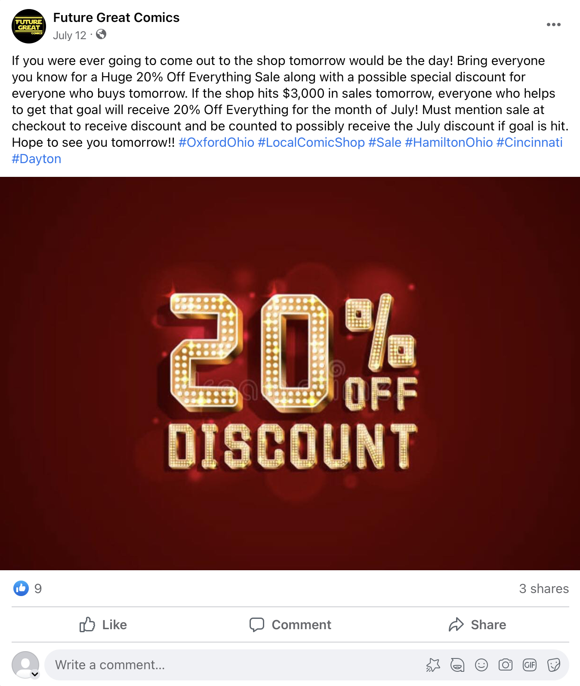
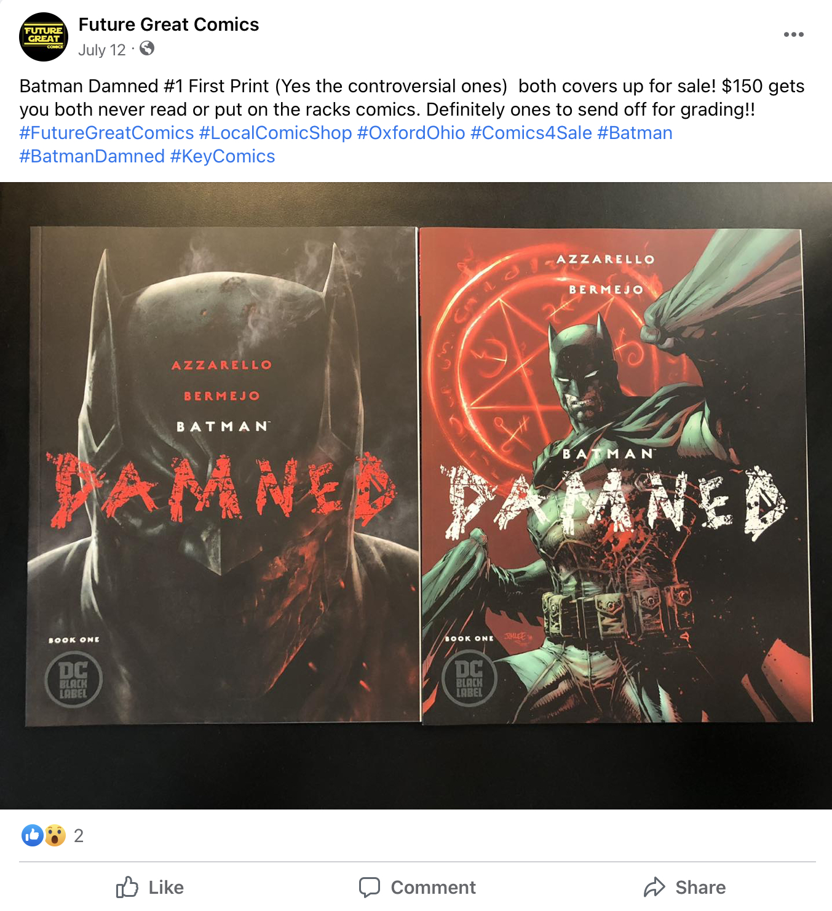
(These are two of the 16 posts made on Future Great Comics’ Facebook and Instagram accounts on July 12, 2023.)
Another factor that may have contributed to these comments being made would be the actual content of
the posts themselves. Out of all of the 34 posts collected, 61.7% of them had the main topic of
their posts was discussing a current sale. These posts were also presented very much like an ad
rather than individual content. According to a study conducted by HubSpot, 64% of social media users
view ads to be annoying/disruptive and 54% believe they disrupt what they’re doing, (An, 2020).
Users simply don’t like looking at content they think is an ad, which is part of the reason ad
blockers make any profits. Due to Future Great Comics’ social media content looking so much like
generic ads, users can very easily start to dislike Future Great Comics’ content and choose not to
engage with it in hopes of receiving less of their content.
User needs and expectations are also
being failed in terms of the accessibility of Future Great Comics’ posts. According to the official
Web Content Accessibility Guidelines (WCAG) set by the Web Accessibility Initiative, only about
64.7% of the 34 posts collected are understandable by disabled viewers. All of them unfortunately
aren’t fully accessible to disabled viewers. This inaccessibility is due to suboptimal use of color
contrast and alt text in Future Great Comics’ social media posts.
Color contrast is the measure
of the difference in luminance between the foreground and background colors. It’s very important to
consider when relying on users to read text on an image, since it may be the one differentiating
factor between the text and the rest of the image, (W3C Web Accessibility Initiative, 2023). While
people with normal vision may be able to rely on differences in hue, many users who are low vision
or color blind aren’t able to distinguish certain hues from each other.
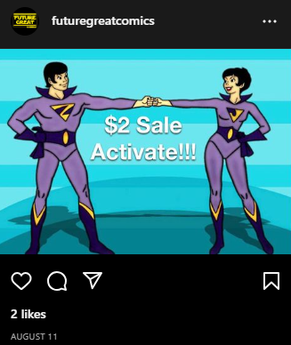
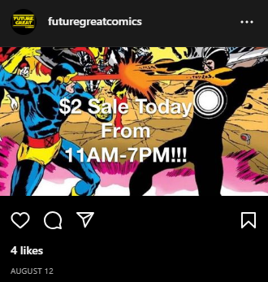
(These are all examples of posts that fail to meet contrast guidelines set by WCAG.)
Alt text or alternate text is written copy that appears in place of an image if the image fails to load on a user’s screen. This alt text is also useful for disabled users who have to rely on screen-reading tools to visually describe images to them, (Becker, 2023). By excluding alt text on social media posts with images, this unfortunately means that not everyone can benefit from the content that Future Great Comics shares. Visually impaired users are excluded from Future Great Comics’ content, which can reflect pretty negatively on their brand.
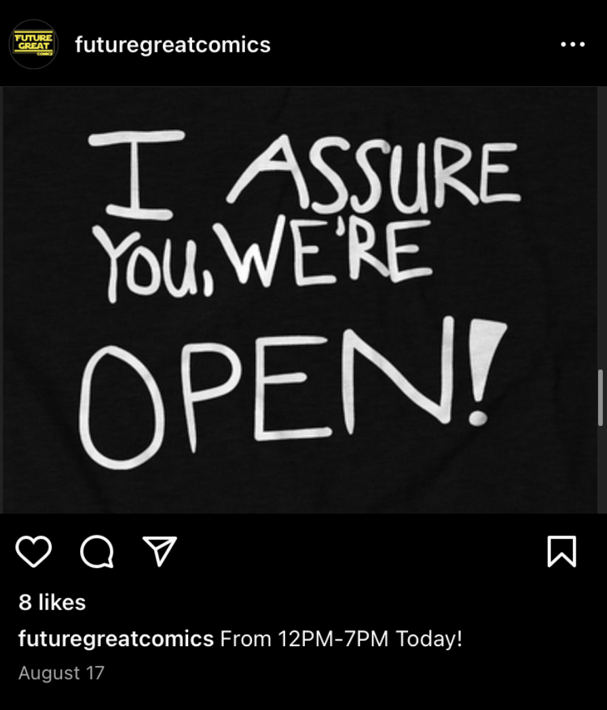
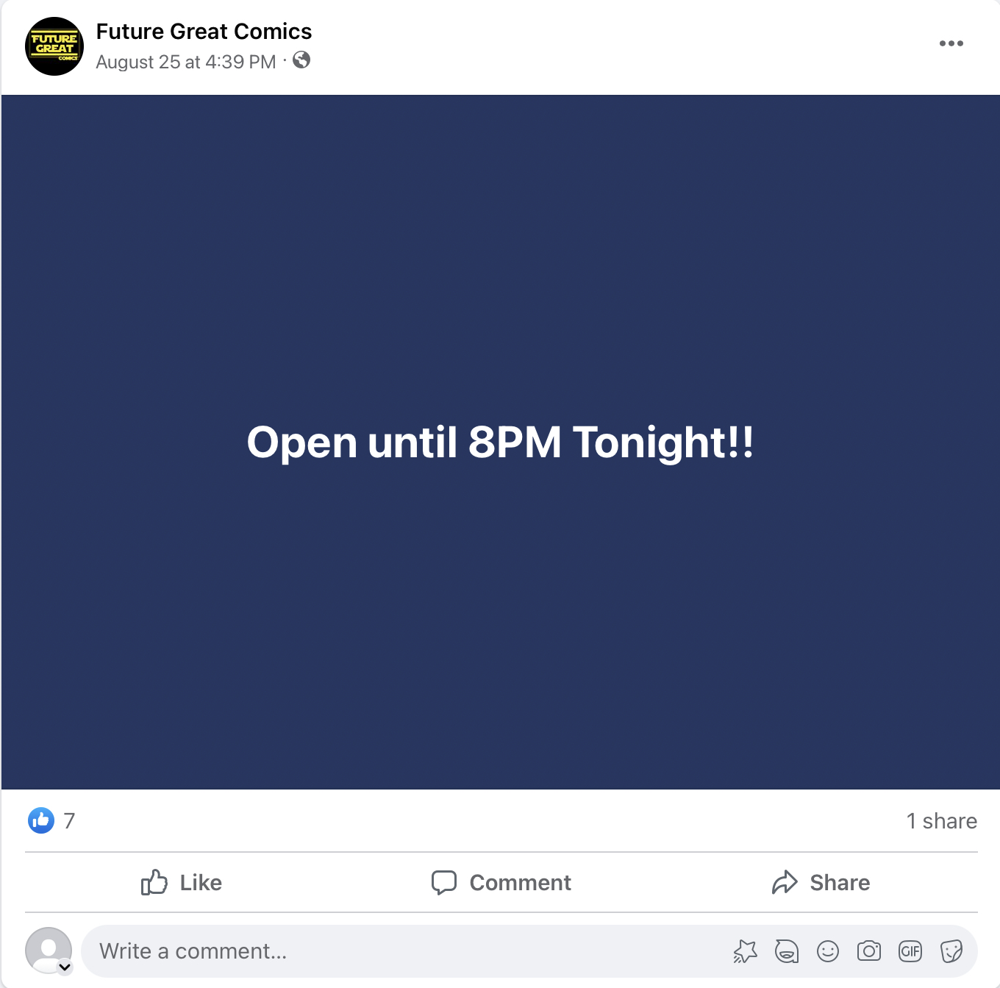
(These are all examples of posts that are inaccessible due to non-use of alt-text.)
FGC Does Not Circulate a Consistent Message that Accurately Reflects the Purpose and Value of the Community
One of the things that Future Great Comics is most known for is providing a place for all different
aspects of geek culture to come together. It serves as the meeting place for all comic book lovers,
TTRPG players, collectors, and many other types of people. However, this message is unfortunately
not well communicated over Future Great Comics’ social media pages.
One of the best selling
items in Future great Comics’ store are the dice sets. These dice are often used by board game or
TTRPG players. However, even though over 85% of all 34 that were analyzed focus on sales and getting
customers to buy items from the store, only 2.9% of the posts analyzed targeted board game and TTRPG
players. Their largest targeted demographic in comparison, comic book readers, have 41.2% of the 34
posts dedicated to them. While Levick does a great job at catering to all of these different
audiences in person, these social media accounts simply do not convey that.
During my usability
and UX research, I wanted to find participants who represented many different target audiences of
Future Great Comics. Participant 1 said that he is a Marvel fan who also likes reading graphic
novels. He plays D&D at least once a week with his friends, and is starting to watch more anime
thanks to his roommate and wants to pick up manga because of it. Participant 2 just likes to play
D&D and other board games but is interested in getting more into graphic novels. Participant 3
enjoys watching anime, reading manga, and playing video games. Some of the video games she spends
most time with are anime-inspired RPGs like the Persona series, Octopath Traveler, and Honkai Star
Rail. She also is an avid D&D player and is currently running 2 campaigns which she plays weekly.
After inquiring about these interests, I asked if they felt like Future Great Comics was able to
represent and provide for them. Although Participant 1 was hesitant, all three of them disagreed.
Participants 2 and 3 both agreed that since they aren’t avid comic book fans, they felt no
connection to Future Great Comics’ social media campaign whatsoever. “It’s really a shame because I
love that store. Their social media just doesn’t apply to me at all,” says Participant 2.
Participants 2 and 3 both said that they believe that Future Great Comics social media campaigns
would be greatly improved if they started prioritizing content outside of comic books and superhero
movies, while Participant 1 argued that their content just needed to include media that’s more
kairotic or more recent.
Another issue I noticed with these posts is not only are certain
audiences alienated through interest groups but also by location. The posts I analyzed have a strong
bias towards Future Great Comics’ Oxford location over their Hamilton one. Over 58.8% of the posts
analyzed referred directly to the Oxford location while the only post analyzed that mentioned the
location in Hamilton was from 2020 before Future Great Comics even opened in Oxford. Although there
are still 38.2% of posts that are unclear on which location it’s referring to, users from Hamilton
might be doubtful that they’re referring to them based on patterns from their other posts. These
patterns could lead to those users feeling forgotten about or uncared for by the business.
Therefore, it should become practice for Future Great Comics to either start mentioning both
locations in their posts or perhaps create a new account centered on that location if they wish to
keep them separate.
FGC Does Not Make the Best Use of Affordances and Platforms to Showcase the Content
When I initially asked participants about Future Great Comics’ brand aesthetic during my usability
and UX research, I received a lot of mixed and unsure reviews. Participant 1 mentioned that he
really liked the business’ brand aesthetic in-store but never noticed much of one on social media.
Participant 3 on the other hand seemed surprised by the question, claiming “I didn’t even know that
they had one!”
In order to test the strength of Future Great Comics’ brand aesthetic, one of my
tasks required participants to look at 10 posts. Of these 10 posts, 5 of them were posts from the
official Future Great Comics account while the other 5 were fake posts constructed using random
photos from Google Images. The average score for all three participants was 46.7% posts guessed
correctly. Participant 1 guessed 7/10 correctly, Participant 2 guessed 4/10, and Participant 3
guessed 3/10. Participants 2 and 3 both struggled throughout the task. Participant 2 claimed that
this task was “nearly impossible” since the posts “all looked like stock images anyway.” Participant
1 on the other hand struggled at first but eventually developed a strategy near the end that allowed
him to guess 5 correctly in a row. When I asked him about his strategy, he said that “the fact that
[Future Great Comics] would never post images with high quality and good artistic composition” was
what helped him succeed.
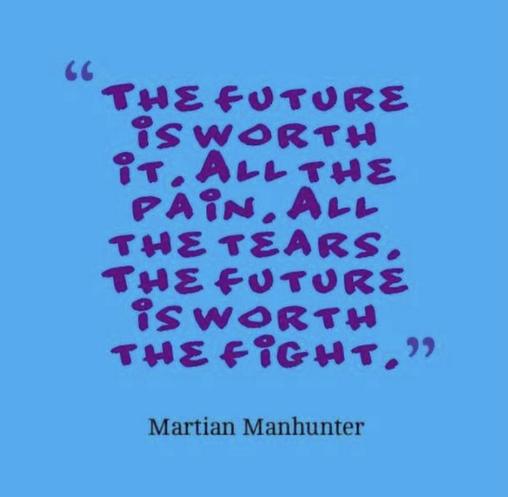
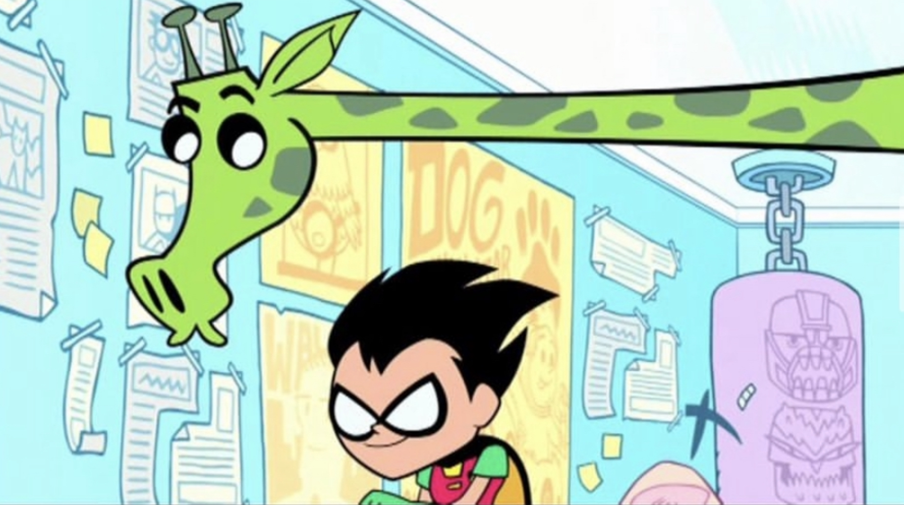
(These are 4 examples pulled from the task I had my participants complete. The two images on the left are real posts from Future Great Comics’ social media while the two images on the right are pulled from Google.)
These results aligned with the results of my own research within my rhetorical analysis. I noticed when analyzing their accounts’ post layouts, there was barely any cohesion seen at all. While the posts individually might manage to give a clearer idea to any viewer on what audiences Future Great Comics serves and what their store is all about, they lack any cohesion or sense once viewed altogether. There's nothing about this feed that tells the viewer about Future Great Comics’ individuality. There’s nothing that gets them to correlate these images with Future Great Comics specifically or convince them to come inside to their physical store rather than purchase their comics or dice online.
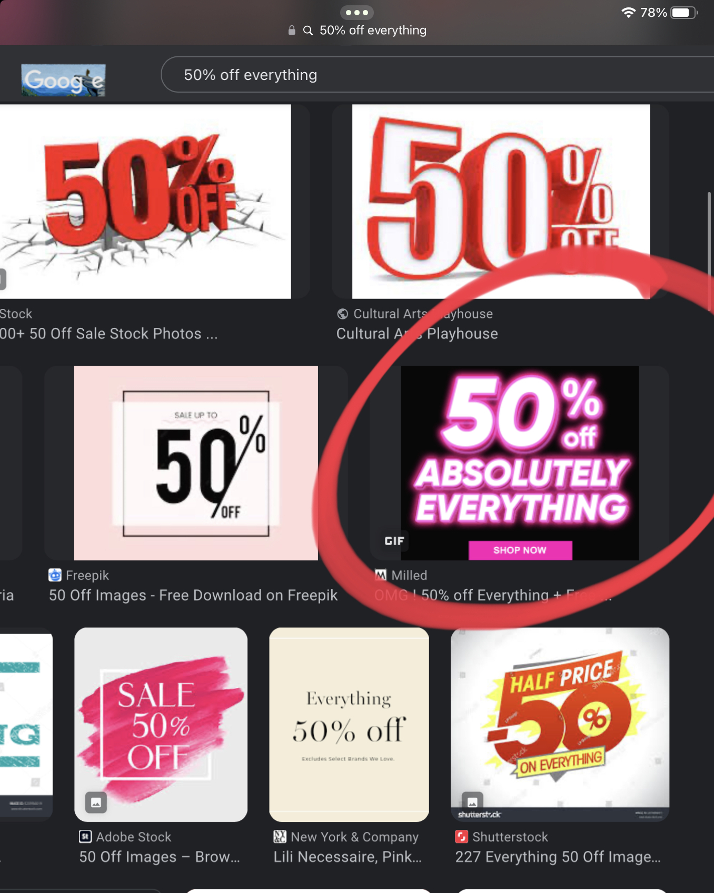
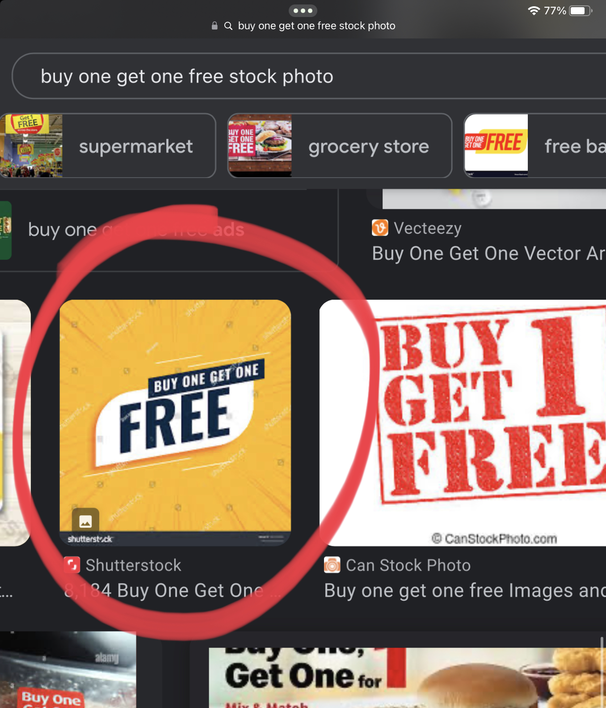
(On the left are 6 of the 34 posts pulled from Future Great Comics’ Instagram and Facebook pages. They all look like stock photos. On the right are results that I found from searching the key terms shown on the posts, proving that they were sourced from Google.)
Not to mention, I discovered during my research that a large number of their posts were in fact just
stock images pulled from Google. The first photo shown above are some of the posts I analyzed out of
the 34 total from Future Great Comics’ social media accounts. I suspected that a lot of them were
merely stock photos from Google images. I tested my theory and was able to find two of them just by
searching the key terms. There were others that I wasn’t even able to find after searching them, yet
that doesn’t change the fact that I still suspected they were stock photos.
Future Great Comics
has accounts on Instagram, Facebook, and Twitter/X. It became quickly apparent after analyzing their
presence on all three, that these platforms were all being misused. Starting with Instagram and
Facebook, Future Great Comics’ Instragam and Facebook content are nearly identical.
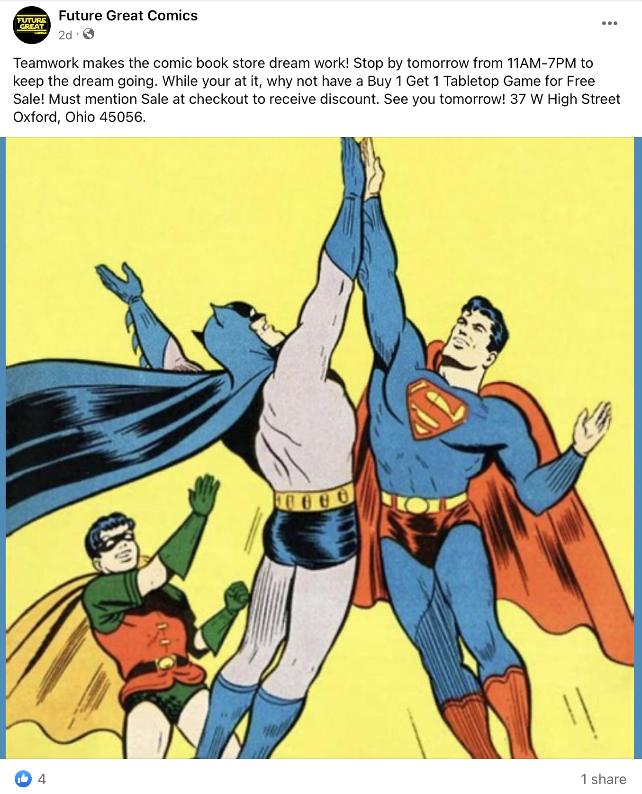
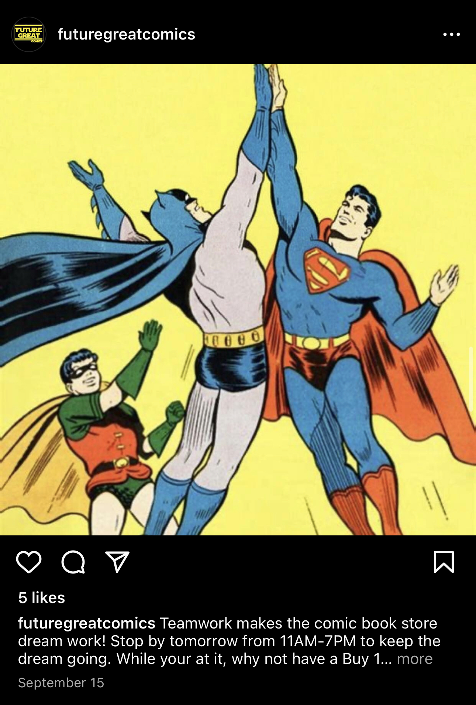
(These are two identical posts with the same photo and caption on Future Great Comics’ Facebook and Instagram pages. They were posted on the same day, within the same hour.)
Analytics have found that using the same post on multiple platforms actually lowers engagement,
(Abimbola, 2023). Users could get the impression that Future Great Comics isn’t taking the time to
fully engage with their audience and their content isn’t as genuine. Dedicated followers who follow
Future Great Comics on multiple platforms could start to get bored of the content or even feel
cheated by it, leading them to not engage as much or simply unfollow. This can also lead to certain
posts being made that don’t favor each platform’s intended audience at all. Although Future Great
Comics is technically trying to cater to the same audience, Instagram and Facebook have completely
different sets of users.
A 2023 Instagram Engagement Report by HubSpot also notes that when it
comes to captions, it’s important to either have a short and concise caption with under 20 words, or
a longform caption with over 2,000. The captions of Future Great Comics’ posts average at around
27.3 words per post. There were three posts collected that had 0 captions and one post with a
caption of about 94 words. A lot of the captions were also rather redundant with the information
given. Eighteen of the posts analyzed included the store’s open hours, 11AM-7PM, in the caption and
five of them had the store’s address. This is already information that is included in the bios of
both accounts, so it doesn’t need to be repeated in the caption.
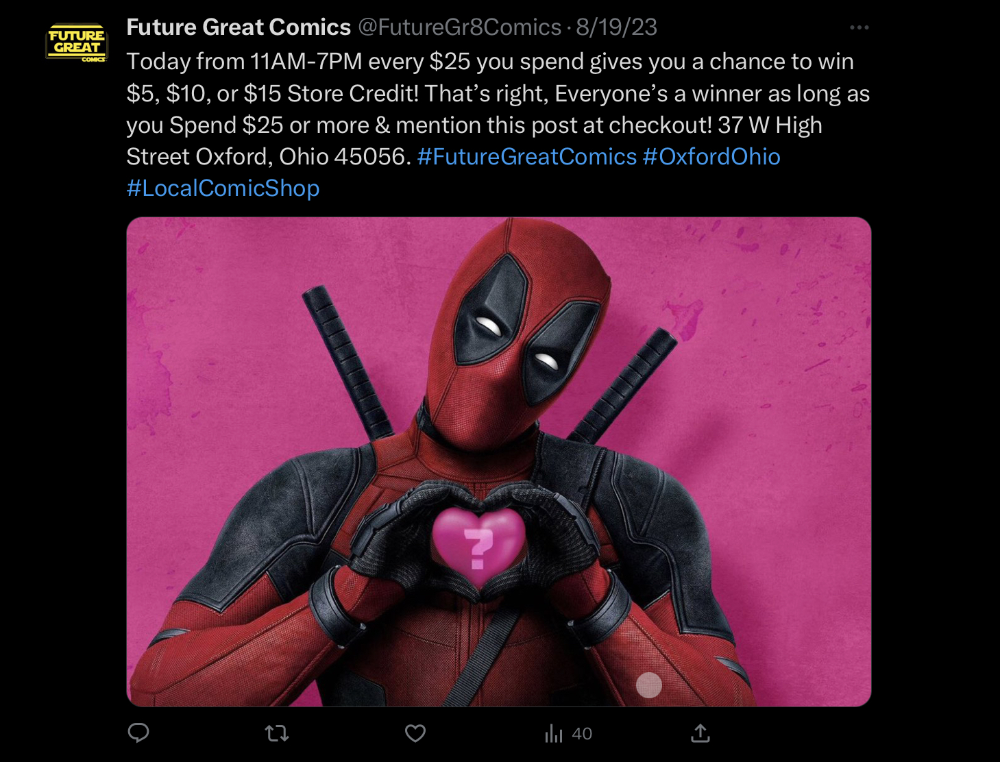
(This a screenshot of a post from Future Great Comics’ Twitter account. It features both the store’s open hours and address in the caption.)
The use of hashtags is incredibly inconsistent, if present at all. Only about 58.8% of the posts collected contained any kind of hashtags. The least amount of hashtags used on a single post was two, while the most was 21. When it comes to Instagram, the algorithm best favors posts with no more than five hashtags, (HubSpot, 2023). In terms of Facebook and Twitter, it’s recommended to only include one or two, (Sadhu, 2023). Numerous studies have shown that posts using more than 10 hashtags can kill engagement by 68.2%, (Sadhu, 2023), so it should be a priority for Future Great Comics to cut down on their hashtag usage.
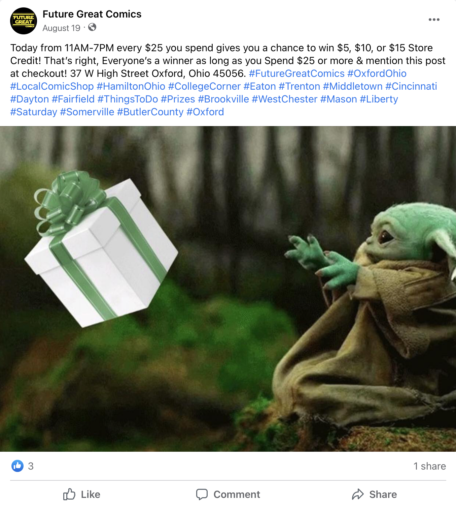
(This a screenshot of the post from Future Great Comics’ Facebook Page with the most amount of hashtags, which is 21.)
One final observation regarding Future Great Comics’ is the state of their Twitter/X account. Despite two posts that were made this August, the last post made on this account was on May 6, 2020. The account only has 89 followers, their bio and location are outdated and only mention the Hamilton location, and the two posts made on the account this August have received 0 forms of engagement at all. This account remaining in this state despite being inactive has many harmful effects for Future Great Comics’ image. It could come across to users as lazy or unmotivated. New users who stumble onto the account could get a lot of outdated and falsified information. It could also lead to a bunch of old followers of the account feeling disappointed or thinking that Future Great Comics disappeared.
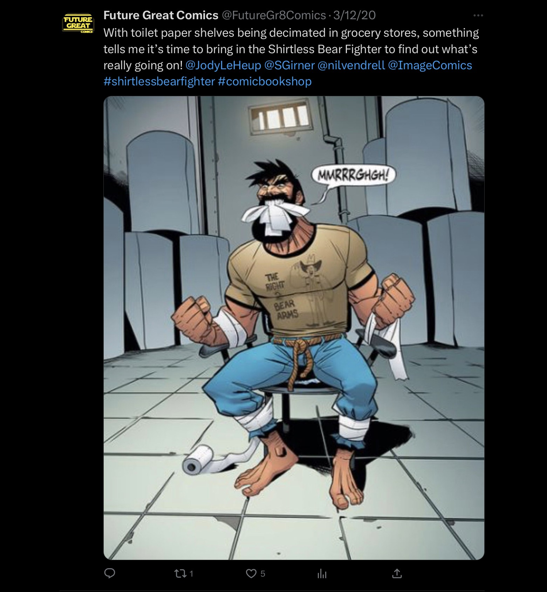
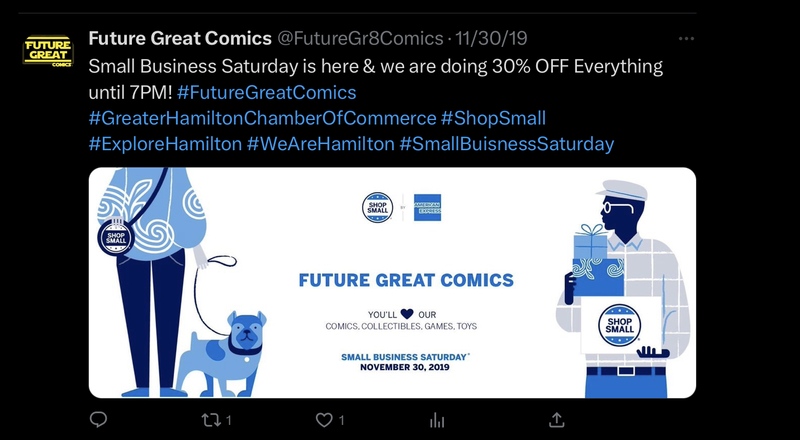
(These are two of the last posts ever made on Future Great Comics’ Twitter/X account when it was still active. These posts were made in 2020).
In order to figure out which platforms Future Great Comics should be prioritizing, I turned to my
participants’ during my usability and UX research. All participants said that they use Instagram,
YouTube, and TikTok. Participant 1 said that he also uses Facebook to keep up with older relatives
who use it and Snapchat to message friends, while Participant 3 said that she uses Twitter/X only to
message friends and Twitch to watch streamers she likes.
When asked which platform they prefer
to use for following business accounts, they all agreed that Instagram was the best platform.
Participant 3 explained that this was because “Instagram is the platform I use the most for general
content. When I use TikTok it’s mostly because I specifically want to waste 3 hours of my life
looking at funny videos. When I use Facebook it’s because I want to check in with my relatives or
older friends who still use it. But when I use Instagram, it’s for a bunch of things, and that
includes businesses.” She also claimed that it felt weird whenever she saw businesses promoting
themselves on TikTok and Snapchat because she associates those platforms less with business.
Participant 2 on the other hand explained that she’d prefer to see business content on Instagram
since that platform is focused on visual content. “If a business wants to promote their products to
me through social media, I obviously want to see what those products are going to look like. How
else am I gonna know if I want to buy them? I think Instagram is the perfect place for businesses
because of that.”
These results from both my rhetorical analysis and is clear that Future Great
Comics should stick to their main platforms of Instagram and Facebook. Instagram has proven itself
to be the platform where business accounts are most welcomed by users and most likely to be followed
and Facebook is best for older generations who visit Future Great Comics. However, Future Great
Comics needs to find a way to make sure that content on both of these platforms are somehow varied,
so users who follow both accounts don’t get penalized. The results from this research also indicate
that it would be in Future Great Comics’ best interest to terminate their inactive Twitter/X
account. Out of the three participants I interviewed, only one of them still uses Twitter/X and they
claimed only to use it for messaging other friends who still use the app. Considering the frequency
of which their user base is dropping, there wouldn’t be much benefit for Future Great Comics if they
were to maintain it.
RECOMMENDATIONS
This section includes my main recommendations which seek to remedy the errors discovered in my key findings in the form of a content strategy plan. My hope is that Future Great Comics is able to utilize this content strategy plan for future posts and create a brand presence that circulates a consistent message, meets users’ needs and expectations, and makes users feel engaged with Future Great Comics’ content.
Substance
Audience
Future Great Comics caters to a diverse range of audiences, reflecting the broad appeal of the
products they offer. Comic book readers, manga enthusiasts, and graphic novel aficionados form a
significant part of the customer base, drawn to the store's extensive collection of traditional and
contemporary titles. In addition, the store caters to tabletop role-playing game (TTRPG) players and
board game enthusiasts in their selling of new board games and dice sets, providing a space for them
to explore new game releases and engage with fellow enthusiasts. The store also appeals to action
figure and vinyl collectors, offering a variety of collectible items to add to their collections. As
a local business, the store also plays a vital role in serving the communities of Oxford, Ohio, and
Hamilton, Ohio. It provides a meeting place for like-minded individuals, hosts events that foster a
sense of community, and contribute to the local economy by offering a unique and enriching retail
experience for residents and visitors alike.
As mentioned throughout my findings, many of these
audiences are often left ignored when it comes to Future Great Comics’ social media posts. Future
Great Comics should expand their current social media campaign to target a broader range of
demographics beyond just comic book readers and the Oxford community. By overlooking other potential
audiences, the store misses out on valuable opportunities to engage with these communities.
Therefore, this content strategy plan hopes to not only broaden its customer reach but also create a
more inclusive and welcoming online space that reflects the diverse interests of their clientele.
Messaging / Voice and Tone
As highlighted in my core strategy statement and messaging framework, it is imperative for consumers
to depart Future Great Comics’ social media page with the impression that Future Great Comics is an
authoritative presence in geek culture and can fuel their passions. If users are able to believe
that Future Great Comics is knowledgeable in the areas that they are passionate about, then they
will be much more encouraged to interact with their posts and buy products from their store. They
will be much more trusting of Future Great Comics’ brand identity and feel much more welcome in
identifying with them.
When it comes to sharing this message, Future Great Comics should convey a
tone that is both lively and informative. By striking a balance between being entertaining and
educational, they can establish themselves as a trusted and knowledgeable source while remaining
relatable to its audience. This approach allows the business to engage with its followers in a
friendly and approachable manner, fostering a sense of trust and reliability. This ensures that
users can find Future Great Comics’ content fun and engaging, while also recognizing Future Great
Comics as an expert within geek culture.
Topics/Types of Posts
As mentioned during my findings, the main topic for a lot of Future Great Comics posts is discussing
a new sale, or announcing that the store is open. While this does technically serve the core
strategy statement and messaging framework I designed, this strategy isn’t that effective when it
comes to engaging users. Instead, users are much more likely to think of these posts as annoying and
attention-seeking. In order to truly engage audiences, Future Great Comics need to create posts with
added value that interests their target demographic but also lets audiences know that Future Great
Comics is a brand that is entertaining and informative.
In order to demonstrate the purpose of
this added value and demonstrate its format, here is a post from Future Great Comics’ current social
media campaign, and here is a post from my proposed social media campaign. Both posts share the same
goal of encouraging users to engage with the post and visit the store, and they both do so under the
theme of Marvel’s Loki series on Disney Plus.
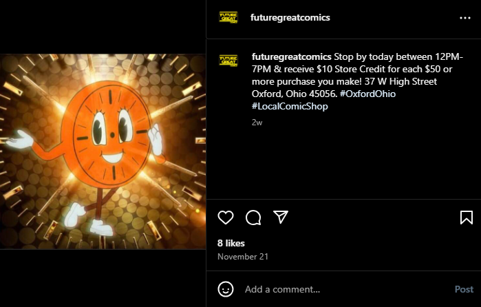
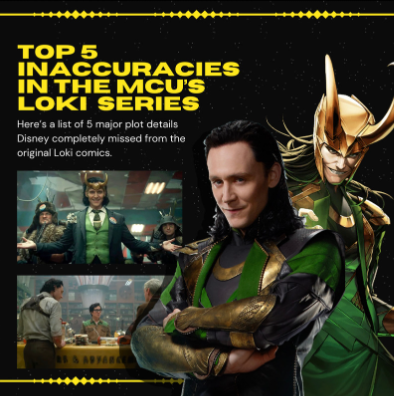
(The picture on the left is a post from Future Great Comics’ Instagram featuring the character Miss Minutes from Loki. The picture on the right is a post from my proposed social media campaign. The text on it reads: “TOP 5 INACCURACIES IN THE MCU’S LOKI SERIES Here’s a list of 5 major plot details Disney completely missed from the original Loki comics.” ).
Rather than a still image, the post from the proposed social media campaign uses an infographic format to add information relevant to comic book readers and MCU fans, which are two of Future Great Comics’ biggest demographics. By including a magic layer that focuses on extensive knowledge on different kairotic facets of geek culture such as the Loki series or Marvel comics helps to establish the business as a knowledgeable and trustworthy source within its niche. Users will be much more likely to trust Future Great Comics when it comes to recommendations on what to pick up next, or trust them to have stock in items that they want. This new format also not only captures the audience's attention but also encourages interaction and sharing, thereby extending the reach of the business's brand and message. This can lead to increased brand awareness and potential new customer acquisition. Additionally, providing value through posts helps to cultivate a loyal and engaged community around the business, which can ultimately translate into customer retention and advocacy. Overall, implementing this new post format will provide additional value to these posts which is instrumental in building a compelling and influential online presence for Future Great Comics.
Sources
When it comes to developing content for posts, the work done should be completely original. Future Great Comics should utilize the branding and style guide listed below when creating posts to help make their account feel like one of a kind. Any curated content used should be properly credited and still restructured to fit the account’s branding guidelines.
Structure
What forms will your content take?
Although Instagram doesn’t prioritize one type of content over another, a 2023 Instagram Engagement Report by HubSpot shows that the type of content that receives the most engagement is video, and the second most are carousels. According to Hubspot, “Users spend longer watching a video or swiping through a carousel than looking at one single image, and that makes it more likely to create an emotional reaction,” (Hubspot, 2023). Therefore, new content should mostly take the forms of carousels and videos rather than still images. These pieces of content will mostly resemble infographics or short educational videos. There are a few exceptions to this which include when general announcements need to be made such as the store hours changing or community events or partnerships. These exceptions should then be posted as story posts rather than main posts. If the information is imperative even after 24 hours, then the story post will be archived on the main page, but still not published as a main post.
Which platforms should be used? What content goes where?
The platforms that Future Great Comics should prioritize are Instagram and Facebook. The Twitter/X
account should be deleted. The current state of Future Great Comics’ Twitter/X only serves to damper
their brand. Having an inactive account with old posts that no longer serve the brand’s current
image can give new users a false perception of Future Great Comics’ identity as a whole.
Additionally, most of the target audience that would be on Twitter/X have most likely fled to other
apps. Since users are slowly leaving the platform, there is no need to keep the account up and
running.
Posts that deal with content that generally caters to younger audiences (for example,
Invincible season 2, Baldur’s Gate 3, Jiujitsu Kaizen Manga, etc.) should be reserved for Instagram
while posts that cater to older audiences should be reserved for Facebook. Posts that have a more
general audience (for example, MCU) can be posted on either platform. Posts that deal with local
events should be prioritized on Facebook but can also be posted on Instagram as a story post.
Workflow & Governance
Branding and Style Guide
Future Great Comics can easily make their posts seem more cohesive and recognizable to users by utilizing this brand style guide. When infographics are posted, they should be created with this main color scheme:
(This is the official color scheme for Future Great Comics’ social media content. The colors from left to right are: #ffe81f, #ffbc0f, #ff981f, #ff621f, and #d70505).
To ensure that these colors all look balanced when they’re used together, I also established a color hierarchy that establishes where and when they should be used:
(This is the official color hierarchy for Future Great Comics’ social media content. Their primary colors are: #ffe81f, white, and black. Their secondary color is: #ffbc0f. Their tertiary colors are: #ff981f, #ff621f, and #d70505).
When following this hierarchy, the color #ffe81f should be reserved for any header text or any main
elements of a post. Body text should typically be white, however if white text does not provide
enough contrast, resort to black instead. If a secondary color is needed at all, use #ff981f.
If any tertiary colors are needed, use #ff981f, #ff621f, #d70505, or any combination of the three.
When these other colors are used, they should not pull from the main color, #ffe81f, but rather only
be used as accents.
When it comes to font choice, headers should be either in the font Horizon or
Horizon Outline and all body text should be in DM Sans.
In terms of infographic imagery, they should lean into the Star Wars aesthetic present in the logo.
This will help the theming of Future Great Comics’ post feel much more cohesive and professional yet
also fun and engaging to viewers. This means posts could feature backgrounds that show stars,
galaxies, or alien planets. Extra elements in these infographics can include spaceships, distant
planets, HUDs, and etc.
This branding guide also considers post accessibility to be of great
importance. One of things that will aid Future Great Comics the most when it comes to increasing
engagement will be making it so everyone is able to properly engage with their content. I would
suggest adding alt-text to any post made with visual content either through the caption or by using
the built-in alt text feature provided on all three platforms and also putting each post through a
color contrast checker before posting. Not only will this make it so low-vision and color blind
users will be able to engage with Future Great Comics’ posts, but it also makes it easier for users
with normal vision if they are using an older device or have different lighting within their
surroundings, (Digital Accessibility Office, 2023).
Best Practices for Writing on the Web
When writing captions for each platform, they should be short and concise yet still maintain the same
fun and informational tone. Captions that include questions for the audience or give them a chance
to engage are best in creating attention or sparking interest and conversation. Any post that is
discussing a community event, sale, or new item on the other hand should be very clear and concise
so users are able to obtain all necessary information.
Two hashtags should be included with every
post. HubSpot’s recommendation for hashtags is to have hashtags that fall in these main categories,
Location, Branded, Niche or Industry, Communities and Fandoms, or Descriptive, (HubSpot, 2023).
Considering Future Great Comics’ identity as a small local business and a comic shop that caters to
a lot of niche interests, I believe the best hashtag strategy would be to include a location-centric
hashtag (#Oxford, or #Hamilton), and a community/fandom-centric hashtag (#MarvelComics, #DCComics,
#DungeonsAndDragons, etc.) in order to emphasize the store’s locality and dedication to the passions
of their audiences.
Editorial Calendar
When it comes to remedying post frequency and the inclusion of multiple audiences, Future Great Comics should develop a content calendar. This calendar will allow Future Great Comics to make sure each of their audiences are equally catered to, avoid making posts that only focus on opening hours and sales, and avoid coming across as “spammy” to their users.
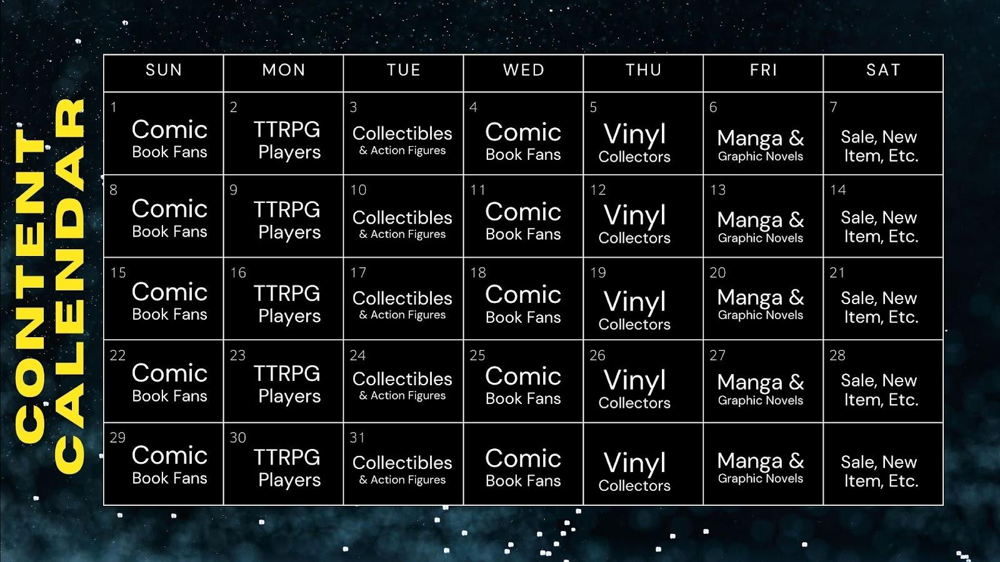
(This is the official color hierarchy for Future Great Comics’ social media content. Their primary colors are: #ffe81f, white, and black. Their secondary color is: #ffbc0f. Their tertiary colors are: #ff981f, #ff621f, and #d70505).
This calendar aims to cover both FaceBook and Instagram. Ideally, both the Instagram and Facebook
accounts would be posting daily. According to Hootsuite, the best schedule would be around 1 post a
day for each account. However, if that gets to be too much, settling for either 1 post a day overall
and alternating on which account is posting or only about 3 posts a week on both accounts should
suffice, (Christison, 2023). This would mean that posts would alternate each day between accounts
during the week (ex. Sunday would be a Facebook day, Monday an Instagram day, Tuesday a Facebook
day, etc.)
If there is an item or potential post idea that doesn’t address any of these
audiences but still makes sense to post to the account, it should be posted on the sale/new item
day. If there is another event that takes priority over that day, post it on one of the comic book
days. These posts should be published around late afternoon to evening (6pm - 9pm) since that’s when
people are usually most active, (HubSpot, 2023).
CONCLUSION
In summary, this content strategy plan highlights my findings from observing the current state of Future Great Comics social media campaign and interviewing previous followers of their accounts. It also provides detailed recommendations that hope to improve Future Great Comic’s social media presence that includes developing a magic layer, utilizing more technological affordances, establishing a brand style guide, and creating a weekly editorial calendar. By incorporating these recommendations, Future Great Comics may see higher engagement rates and more customers within their store.
REFERENCES
Abimbola, A. (2023, August 24). Should you post the same content to all social media platforms?.
Mauco Enterprises. https://mauconline.net/should-you-post-the-same-content-to-all-social-networks/.
An, M. (2020, January 14). Why people block ads (and what it means for marketers and
advertisers). HubSpot Blog.
https://blog.hubspot.com/marketing/why-people-block-ads-and-what-it-means-for-marketers-and-advertisers?__hstc=77521994.19c2aea516f9597d11f0c463d0709762.1696697721547.1696697721547.1696697721547.1&__hssc=77521994.1.1696697721547&__hsfp=1541278333.
Becker, B. (2023, July 28). Image alt text: What it is, how to write it, and why it matters
to Seo. HubSpot Blog.
https://blog.hubspot.com/marketing/image-alt-text#:~:text=Also%20called%20alt%20tags%20and,crawl%20and%20rank%20your%20website.
Brook, C. (2018, June 7). Does posting more often on Instagram reduce reach?. Social Media
Today.
https://www.socialmediatoday.com/news/does-posting-more-often-on-instagram-reduce-reach-report/525082/.
Blitstein, L. (2021). Comics store opens in Oxford. Oxford Observer.
https://oxfordobserver.org/5369/city/comics-brought-to-life-in-oxford/.
Christison, C. (2023, July 6). How to make a social media posting schedule. Social Media
Marketing & Management Dashboard.
https://blog.hootsuite.com/social-media-posting-schedule/#:~:text=On%20Instagram%2C%20post%20between%203,and%205%20times%20a%20day.
Decker, A. (2023, March 23). Everything you need to know about social media branding. Buffer
Library.
https://buffer.com/library/social-media-branding/#:~:text=Your%20social%20media%20branding%20gives,that%20resonates%20with%20this%20audience.
Digital Accessibility Office. (2023). Top 10 Tips for Accessibility: Color Contrast.
https://digitalaccessibility.unc.edu/resources/top-10-tips/color-contrast/#:~:text=Color%20contrast%20impacts%20the%20readability,the%20lighting%20of%20their%20surroundings.
Gomez, R. (2023, September 29). The importance of Social Media Marketing: 7 stats that prove
social’s role in business success. Sprout Social.
https://sproutsocial.com/insights/importance-of-social-media-marketing-in-business/.
HubSpot. (2023). 2023 Instagram Engagement Report.
https://www.hubspot.com/hubfs/2023_Instagram_Engagement_Report_V2%20(1).pdf?hubs_signup-url=offers.hubspot.com%252Finstagram-engagement-report&hubs_signup-cta=Download%2520Now&hubs_offer=offers.hubspot.com%252Finstagram-engagement-report&ref=buffer.com.
Martin, M. (2023, August 10). 21 social media best practices to follow in 2023. Social Media
Marketing & Management Dashboard. https://blog.hootsuite.com/social-media-best-practices/.
Sadhu, S. (2023, September 28). Hashtag strategy guide for Social Media Platforms in 2023.
SocialPilot.
https://www.socialpilot.co/blog/hashtag-strategy#:~:text=We%20advise%20you%20to%20use,key%20activities%20throughout%20the%20network.
Spilka, D. (2016). Cross-posting on social media: Should you do it?. Semrush Blog.
https://www.semrush.com/blog/cross-posting-on-social-media-should-you-do-it/.
W3C Web Accessibility Initiative, (2023). Web Content Accessibility Guidelines 2.0.
https://www.w3.org/WAI/standards-guidelines/wcag/.
Overlook
Written May 2025
7,620 words, 30 minute read
This piece is a full content strategy plan I wrote as part of my Professional Communications and Rhetoric class. This was a semester long project which focused on picking a particular local brand, analyzing their social media presence, and creating a new content strategy plan that better fits their brand and the needs of their audience. The brand I chose was a local comic shop in my area, Future Great Comics.
If you'd rather read this as a PDF, click here!